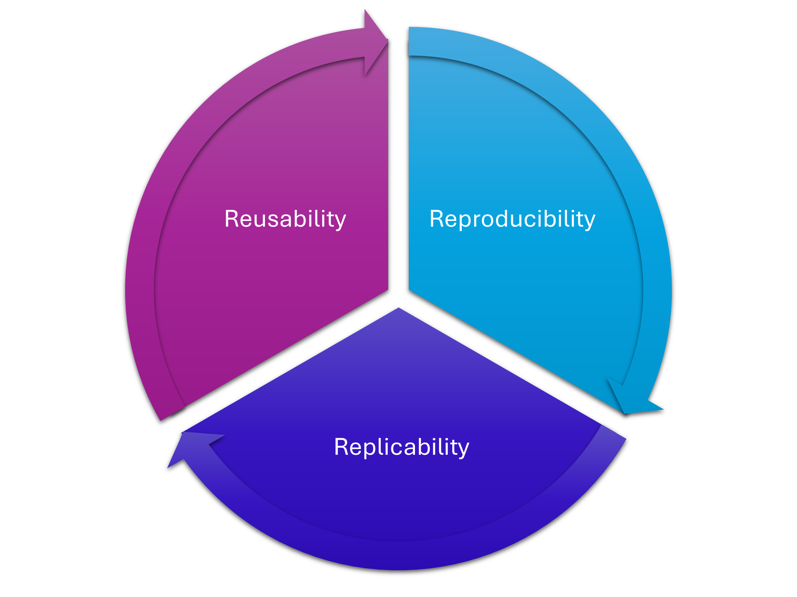

![]()
How do we define reproducibility, replicability, and reusability, and how do they tie together?

I’ve defined these below in reference to “the original study”, the hypothetical work we are testing to see that it is reproducible, replicable, and the code/methods are reusable.
I’ve provided some basic examples for each section. I’ve assumed the use of Python code just to be able to name specific packaging tools, but the ideas are language agnostic.
Reproducibility
When you or others are able to obtain the same results (within a certain tolerance) as the original study, when using the same input data, code, and coding environment, on the same computing platform as the original study.
- This is important for verifying the integrity of the work and avoiding mistakes, computational errors, and fraud.
- Reproducibility requires the following (wherever possible) to be accessible/shared:
- The exact code used;
- The exact data used;
- The exact computational environment used (so a copy of your exported conda environment with exact pinned versions of all dependencies, or a container, details of the platform used)
- An example of this going wrong is when people run Jupyter notebook cells out of order, leading to unreproducible results: in a sample of 936 published notebooks that would be executable in principle, Wang et al. (2020) found that 73% of them would not be reproducible with straightforward approaches, requiring the reader to infer (and often guess) the order in which the authors created the cells (Wang et al. 2020).
To find out more about using Conda environments for reproducibility, please read this blogpost on dependency management, and also check this documentation on dependencies, and work through the examples in this tutorial on Installing and Managing Applications on the HPC for a step-by-step guide.
Replicability
When you or others are able to produce results that align with the results of the original study, while using different input data and different code, but using the original studies methods or theories.
- This is important for the validation of the results and conclusions of the study
- Replicability requires the following:
- Clear and complete methodological documentation;
- Description of assumptions and caveats.
- An example of this going wrong is when people upload code without documentation, data without useful metadata, and environment files/containers without any guidelines as to how they were used, but haven’t compared their numerical outputs to an analytical case, and haven’t documented the maths they have used behind their code.
Reusability
When you or others are able to easily use the code or data produced as part of the original study, and potentially rework it and extend it for new applications, contexts, or studies.
- This is important for open research, for collaboration and building on previous work, and to support reproducibility and replicability (as it allows other groups to use your code to try to reproduce your results, or to test different parameter spaces and see if they can replicate the conclusions you drew from your work).
- For research code to be reusable, you need:
- Good documentation on how to install/run/modify the code;
- This does not have to be formal - it can just be useful comments - but adhering to formal syntax etc. for documentation makes it easier to read and more useful!
- Providing useful shareable environment files (for example, a Conda environment file);
- Note that this is often different to a environment file for reproducibility - please read the links in the reproducibility section to understand the distinction!
- Including appropriate licensing so that people can legally use the code.
- A testing or validation suite to make sure that users are getting the correct results on their own computational system.
- Good documentation on how to install/run/modify the code;
Reusability oftentimes gets sidelined to let reproducibility take the main stage, but it is essential - being able to produce the same results on a different platform hints at far more robust research code than only being able to reproduce the results on a single machine; obviously when it comes to floating point precision etc. systems, GPUs, builds, and compilers all will matter. This editorial in Nature Computer Science titled “But is the code (re)usable?” highlights this, and further ties together reusability and replicability as two sides of the same coin when it comes to computational research:
While it is crucial to guarantee the reproducibility of the results reported in a paper, let us also not forget about the importance of making research artifacts reusable for the scientific community.
Reusability, which can also be referred to as replicability, goes beyond reproducibility: it entails obtaining consistent results with new data, and in some cases, in the context of a new scientific application. Making research artifacts, such as code, reusable allows other researchers to more easily investigate the same or similar scientific questions as new data become available and new ideas are developed, thus helping science progress at a faster pace.
– Editorial, Nature Computer Science (Nature 2021)
Conclusion
These three terms are closely interlinked, and should all be strived for when it comes to writing research code. This can feel daunting, which is why I often teach researchers to use the “DeReLiCT” acronym (to prevent your code falling apart) for preparing research code:
- Dependencies:
- Record your exact dependencies for reproducibility;
- Record a shareable version of your dependencies that will work on other platforms for reusability and replicability;
- Use a dependency manager to make your life easier.
- Containerisation also works to support this.
- Repository:
- Record your work (using version control effectively) in a Git repository, including a record of your working environment, and snapshot the version of code used to produce results and upload this to an archive (such as your university data repository, or Zenodo) for reproducibility;
- Create a useful ReadMe file to help other people use your code, and include a shareable version of your environment file for reusability and replicability;
- Leverage tools available on plaforms like GitHub to build documentation to make the code more reusable.
- License:
- Add an appropriate license to you shared repository for reusability;
- Citation:
- Make your work more easily citable and reusable by providing guidance on how others should reference your work
- Testing:
- Ensure the validity of your work by implementing a testing suite, both to test the code correctness, and also the scientific/research assumptions, for improved reproducibility and replicability.
- Use automated testing tools on GitHub to highlight this robustness, making your work more reusable.
You can read more about how to implement the above into a project workflow with my webapp Sustainable Software Development (you may have to click “Wake this webapp” as it is on a free hosting option and shuts down when not in use).
Also, the course notes here for SWD3: Software development practices for Research in Python will help you step through an example project.
Final note
This is a living document, a work in progress, and is my interpretation of the above ideas. Please contribute your suggestions using the Hypothesis annotator tool in the margin to leave comments!
References
Citation
@online{murphy_quinlan2025,
author = {Murphy Quinlan, Maeve},
title = {Reproducibility, {Replicability,} \& {Reusability}},
date = {2025-06-16},
url = {https://murphyqm.github.io/work-notes/posts/reproducibility/},
langid = {en}
}